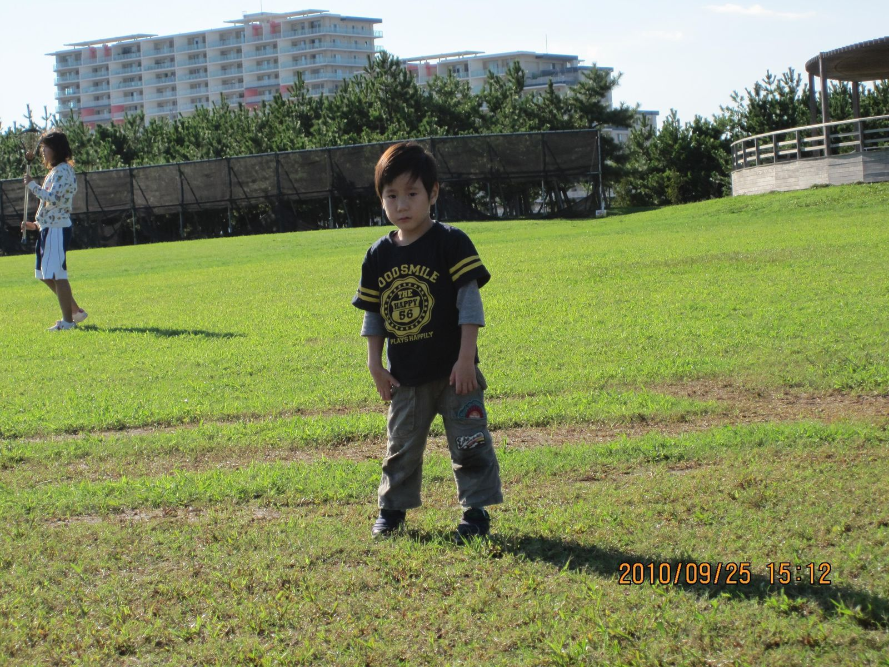
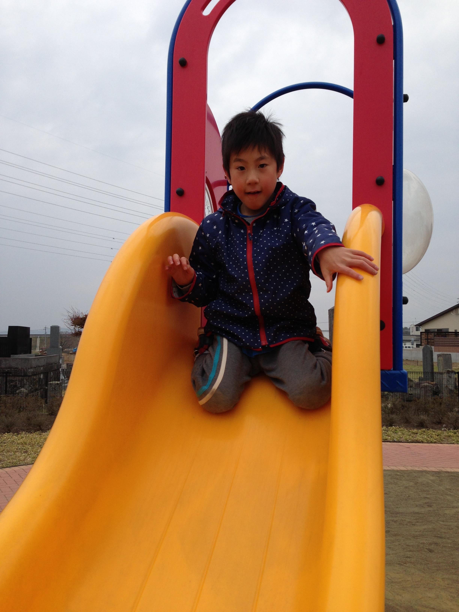
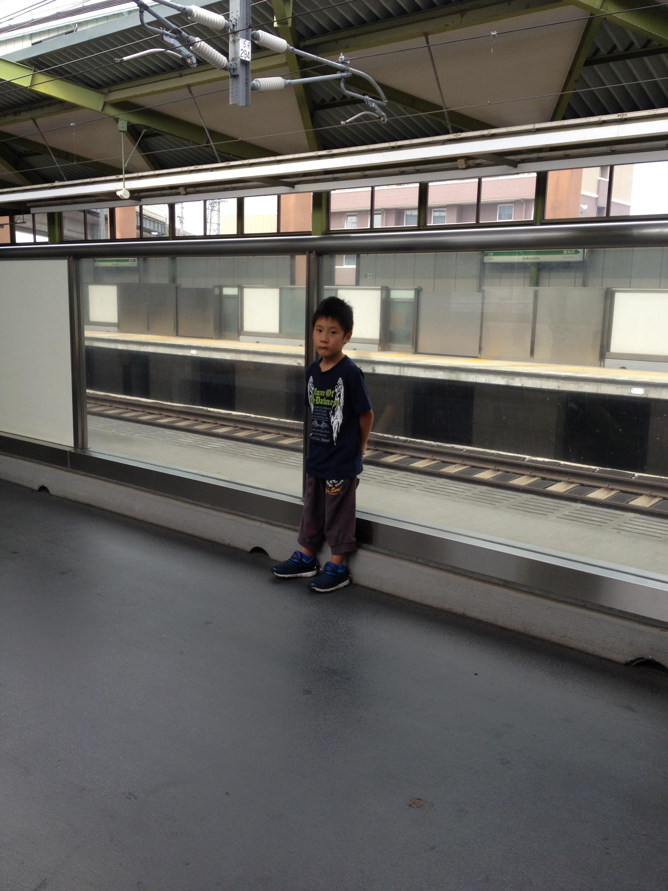

ケース３ 智樹君
◎ 我が子の発達経過
私たち夫婦は、子どもが欲しいと願っていました。その願いが叶ったのか子どもが宿ったのです。子どもが産まれることとなり、産まれる日を待ちこがれていました。
そんなある日、妊娠23週６日目の2006年03月の夕方、突然の多量の出血と破水となり、夫の運転するマイカーでかかりつけの産院に急ぎました。
診察の結果、子宮内感染と伝えられ、急遽の手術が決まったのです。しかし、手術で赤ちゃんを取り出した後、赤ちゃんをNICUに預けなければならず、かかりつけの産院にはNICUが無い為に、最寄りのＡ市立病院産科に救急車で搬送されることとなりました。
搬送先で無事に帝王切開で産まれた我が子は、小さな産声を上げて644gでした。
産まれて１ヶ月の時、動脈管開存症の手術を日赤病院にて受け、手術はうまく行ったものの後遺症で左声帯麻痺になってしまいました。それでも６ヶ月ほどのNICUの生活を経て、智樹は両親の待つ我が家に夫に抱かれて入りました。
智樹の家庭での生活が始まっても、私たち夫婦は首のすわらない我が子にとまどいながらも、愛情豊に育てていました。出産したＡ市立病院の新生児フォローアップ外来に毎月通い、智樹の発達を医師に見守っていただき、異常の早期発見と治療が可能となるよう診察を受け続けていました。
新生児フォローアップ外来に通っていても、智樹の成長は育児書とは異なり、発育が遅く思えてなりませんでした。通う新生児フォローアップ外来の先生に発達の遅れについて尋ねても…
「産まれるのが早かったので、その分遅れてもしかたないですね」といわれるだけでした。
それでも１歳１ヶ月でおすわりができるようになり、夫婦二人で喜びの笑顔が現れたこともありました。それにしても発育は悪く、身長や体重は増えていくものの、物の理解や言葉が出ずに、運動能力も発達しているとは思えない日々が続きました。
そんなある日、毎月通うフォローアップ外来の女医先生に…
「発達が遅れているので、脳のMRIで頭内の検査をして欲しい」とお願いしたが…
「MRI検査をしたところで、何も出ないでしょう。それよりも知的障害の可能性がありますね」といわれました。
１ヶ月後にフォローアップ外来に受診したとき、女医先生から…
「発達障害の可能性がある」ともいわれました。
笑顔とはいえないものの深刻さも無いままに、簡単に我が子の障害を告知するその態度に驚き、知的障害も発達障害もよくわからなくショックを受けたが、知的障害と発達障害の説明を求めても、私の顔を見て嫌な顔をされただけで何の説明も受けられませんでした。生後２年でフォローアップ外来に通うことも止めました。
智樹の生活は、１歳半頃から地元のこども発達センターに通い、理学療法と心理指導を受けていました。うさぎ跳び様の変形四つ這いを２歳半頃から始め、３歳半からつかまり立ち、つたい歩きを始めたのです。
国内でも有名な障害児総合療育センターに、４歳で２ヶ月間の母子入園しました。理学療法、作業療法、言語聴覚療法、心理療法の指導をそれぞれ受けました。
こども発達センターや障害児総合療育センターで様々な指導を受けましたが、どちらの医師も理学療法士も、「今後智樹が独歩をすることは難しい」との見解でした。
まもなく２ヶ月の母子入園が終えようとしていた頃、手術で入院していた子どものお母さんと遭遇し、智樹の発達が画期的に変化することとなったのです。
手術をして入院している子どもは、こども発達センターや障害児総合療育センターで理学療法士が行っている運動療法とは全く異なる治療法で、多くの子どもたちの運動機能を改善進歩させているとのことなのです。見たり相談してみたければ、その労を執るといわれ、母子入園が終えてから受けることとしました。
母子入園を終えて見学と相談に出かけると、Ｂ区の障害者センターの和室で、順番に子どもたちを一人の人が診ていました。今まで診たことも経験したことのない動きを、子どもたちにさせているのですが、子どもたちも泣くことも嫌がることもなく受け入れ、このようなハビリテーションがあったのだとびっくりしました。智樹の相談となり、智樹は前の子どもと同じように身体を動かされても、今までのハビリテーション訓練の時とは異なり、泣きもせずにやられるがままとなっているのです。
∞ 訓練指導に当たる者から見た智樹君の変化
智樹君の運動機能状況を診ながら、〝何故にこの子を歩かせられていないのか？〟と思いながらも智樹君を立たせれば、後ろに重心を置いて立とうとするのです。〝どこの療育施設の指導も、このように後ろに重心を置く指導を行い、歩くことなどできないことが何故に理解されないのだろうか？〟、歩けていない智樹君の状況を診ながら、お母さんに問いかけをしてみました。
「何を期待されて来られたのですか？」
「今まで診ていただいていた医師や理学療法士の先生たちが、歩けないかも知れないといわれていますが、歩くことができるでしょうか?」と、思っていたような内容で答えが返ってきたのです。
「この子を歩けるようにしなければ、どのような子どもを歩くようにするのですか？ それ程の期間を要しないで歩くようになるでしょう」と答えながらも、〝本当にそうなるかな？〟とも考えていました。
智樹君の訓練内容として、床からの立ち上がり、立位保持、歩行器歩行としました。家庭でもできるだけ取り組むように支持しました。
歩行器歩行だが、智樹君はクロコダイルといわれる歩行器を持っており、これをPCWと同じように使用していましたが、これを押し型に変え、前輪を自由に動くようにし、後輪はキャスターのように動くようにして使いました。PCWでの歩行器を握る高さは、腰の高さ付近だが、乳頭直下の高さとして使用しました。握り幅は、肩幅より少し広めとしました。
初回から１週間後の訓練日まで、お父さんが智樹君と歩行器で歩くことがおもしろいといって、毎日朝夕と家の前の広いコンクリートの上を歩いていたとのことでした。
・ 訓練を開始して１週間後：床からの立ち上がりで、立たせると数秒ほど一人で姿勢を維持していた。智樹君が一人で、歩行器を押して歩くようになる。
・ 訓練を開始して３週間後：床からの立ち上がりで、10秒程姿勢を維持していた。立っている智樹君の背を軽く押すと、そのまま数歩の独歩を行う。
階段昇降を訓練内容に加える。昇りは練習ができたが、降りは後ろの膝が曲がらないためと、怖がる様子でできなかった。
・ 訓練を開始して１ヶ月後：一人で床から立ち上がり、10m程の独歩を行うようになる。
・ 訓練を開始して２ヶ月後：床から一人で立ち上がり、自由に独歩をしている。
|

|
・ 訓練を開始して６ヶ月後：自由に歩くようになったが、他の人のいうことを聞かずに多動となるのではなかろうか？
◎ 智樹君のその後
2011年03月11日金曜日、14時46分に起きた東日本大震災で智樹君の家族は転居することとなり、転居に伴い訓練会には来れなくなり、お母様とのメール連絡が智樹君を知る方法となりました。
・ 受信日時 : 2012年 7月10日（火曜）
智樹の状況ですが、去年より震災の影響で○○県△△市に引っ越ししました。
年長の一年間を保育園で過ごし、今は養護学校に入学しました。
保育園では加配の先生を付けて頂いて、一人で出来ることはやらせてもらいました。
加配の先生がとても熱心な先生で、智樹の細かい要求が分かるようにと絵カードを作ってくださったり、親の私が智樹には無理なんじゃないかと思うことも、サポートしながら、智樹に挑戦させてくださいました。
おかげで智樹自身もチャレンジするこ とに自信がついたと思います。
お友たちにも恵まれて、本当に楽しそうでした。
健常のお友達と触れ合える貴重な一年間を充実して過ごすことが出来ました。
四月より、養護学校に入学しました。肢体不自由児のお友だちも同じ学校です。自然に囲まれて、のびのびしていて手厚くて、学校にはとても楽しんで通学しています。
学校から帰ると、ぐったりしてます。たくさん身体を動かしているようです。学校は三時半に終わります。放課後は、障害児が遊ぶ事業所に五時半までいます。ヘレンケラーのサリバン先生のような、熱心な先生がいてトイレトレーニングを頑張っています。
PECSを教えて頂き、絵カードでコミュニケーションを取れるようになりました。
障害だからとわりきってしまった自分を反省しました。もっと、親も頑張らなければと思います。
・ 受信日時 : 2012年 7月11日（水曜）
先生が仰るとおり、走り回っています。
ラーメンと新幹線が大好きなんですが、いうことを聞かないと「ラーメン行かないよ、新幹線見に行かないよ」というとピタリということを聞きます。
ですが、やはり横断歩道などは手をつながないと飛び出します。
歩行も、歩くのではなく走るので一緒に歩くことや、待つことを教えていきたいです。
・ 受信日時 : 2014年 7月 3日（木曜）

|
智樹は、養護学校三年生になりました。
階段も手すりなしで上り下りし、滑り台も大好きで自分で出来ます。
|
本当にあの時、あれ程に自分で歩くことは難しいといわれていた智樹が、短期間の訓練によって歩くようになるなどとは、手術で入院していた子どものお母さんに会った時には、信じることなどできなかったのに、実際に智樹が一人で歩く様子を見て、以前の訓練内容と換わった後の訓練内容の違いに、以前の訓練指導を疑問に思いました。
先生に教えていただかなかったら歩けていなかったと、夫とよく話しをするんです。
知的にも上がりましたし、何より歩けることで遊びも広がり楽しそうです。
・ 受信日時 : 2015年10月 8日（木曜）
智樹の最近の遊びは、
○ 低い壁のぼり（ロッククライミング）。
○ ブランコに１人で乗る。
○ 雑巾がけ。
○ ターザンロープ（座るところが安定感のあるものなら出来ます）。
です。
そしてできるようになったことは…
○ トイレは、大小１人でできます。ここ数年、失敗は１度もありません。ですが、大便はまだペーパーでふけません。
トイレのドアを開ける→便座に座って用を足す→パンツ、ズボンをあげる→水を流す→ドアを閉める→電気を消すを１人でできます。
○ ペクスという絵カードコミュニケーションは、２語文を作り相手に伝えられます。
例えば… 自転車お願いしますとか、滑り台行ってきます等です。
○ トーマスが好きです。出て来るキャラクター30から40種くらいを理解しています。
♪ 保護者の感想
成長した我が子の手を引き、いや、引かれているのは私かも知れないのだが…
故郷となるこの山国で、我が子と手をつなぎ歩くことができるこの喜びを、障害をもつ全ての子どもの保護者に伝えてあげたい！
|

|
♪ 指導者の感想
医師や理学療法士が、「今後智樹君が独歩をすることは難しい」と保護者に伝えていたのは、多動となることを予想して、独歩になることを避ける指導をしていたのかも知れません。しかし私は、多動を抑制して、知的、情緒、言語などの発達も進む運動機能を伸ばすことに成功したと自負しています。
製作 LS-CC松葉杖訓練法 湯澤廣美